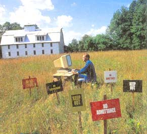

The Complete Guide To Internet Privacy
Our guide to the Internet will help you surf and shop safely.
By Jim Aspinwall
October/November 2000
The internet may not be a "frontier" anymore, however it can still be a wild place in the ways and mean we computer users may use it... and be used by it. The technologies, like the pathways of commerce, are new, and for the time being there are few laws regulating your online security and privacy. As with any huge gathering of people, the vast majority of the internet is composed of fair- minded citizens and good clean enjoyment, but a certain percentage is at least questionable, if not immoral or illegal.
You may have heard of the disastrous consequences of having your identity stolen" by an individual who uses your social security number and/or credit card number to purchase items, grab government benefits and commit other crimes. This is a consideration you must keep in mind when you use the Net because privacy violations, the dissemination of personally identifiable information, unwanted e-mail, viruses and e-commerce abuse are only going to get worse before they get better. Even though many Internet service providers (ISPs), the government and participating companies are doing a lot to help make the Internet a safer place, it's still largely up to us to protect ourselves in the Web wilderness.
INTERNET CONNECTION BASICS
When you connect to the Internet with a standard modem, you become one of millions of relatively anonymous dial-up customers accessing the Net via thousands of ISPs around the world. Your PC is assigned a temporary host name and (IP) address more or less at random by your ISP. This information does not pertain to you personally, but to your computer hardware as a part of Internet communications technology, and it stays with you only as long as you're online.
No one can anticipate when you will dial up to get online, nor can they track down your individual system because it is not personally identifiable. When you log off, you're truly off the Net. Because of this random nature, traditional dial-up offers a degree of security. With most "always-on" (Digital Subscriber Line [DSL] and cable) connections, you usually have one or two permanent IP addresses and host names that identify your specific computer - thus, your electronic door is always open.
Chances are your Internet connection is funneled through an ISP that offers little or no protection to the computers connected through it. Like it or not, your PC just becomes another vulnerable host on the Internet. This is your first point of concern, because you are responsible for your own protection. As Steve Gibson of Gibson Research puts it, "When you are connected to the Internet, the Internet is also connected to you."
The types of data that travel along the Internet are generally unrestricted. Yes, there can be pornography and computer viruses traveling the same wires that bring virtual Disneyland to the computer in your family room. This undesirable traffic does not reach your computer because it was not addressed to it. You can't just access gory pictures of violence, and no one can send unwanted data to your PC you have to request it by browsing unsavory Web sites or by downloading, installing and running actual program files.
When you "visit" a Web site, you are basically asking to see documents that are stored on someone else's computer. You are more or less anonymous unless someone wants to scour the Web server's records for details of your specific visit to it. Owing to new Web browser program features, Web pages can also contain programs that can be sent to your computer - some that could have a malicious property to them. Your Web browser program offers some security against dubious Web sites and annoying content, but you may want to add additional protection.
E-mail presents a different twist to the delivery of data to your PC because you have little control over its source. E-mail is delivered to your computer when you connect and ask to retrieve it from an email server. You have no control over what someone is sending you - whether plain text, a Web page or a file attachment that may contain a virus. If the mail is sent Web page style, or you open the file attachment, you could expose your system to a virus.
You can avoid most e-mail-related security concerns by keeping your email program up-to-date against security vulnerabilities and by using the virus protection software discussed in the next section. It's important to know that e-mail can be traced back, with some approximation, to the point of origin, but those who want to send e-mail anonymously can do so with any number of Internet and software tricks. Likewise, e-mail you send is traceable back to you, or at least to your ISP's server and possibly to your individual dial-up session. Given enough time and investigation it is possible to trace e-mail back to a specific PC, but this is rarely done unless you are truly creating an "e-nuisance" of yourself. Making sure your email is secure only requires a couple of extra steps and some special software.
Privacy Protection at Work
This issue has been bandied about to near exhaustion. Simply put, employers provide equipment, software and internet connectivity to run their business. It is certainly reasonable for corporations to create policy for their employees that addresses the risks of handling potentially discriminatory or harassing information inside the office.
Employers have a right and a responsibility to preserve the integrity of the corporation and the well - being of the entire employee base in all aspects. This includes information that flows in and out of their facilities, which extends to any equipment services that may provide an employee working at home. Internet connectivity at work thus an on-the-job privilege.
PRACTICING SAFE NET
1. GET THE UPDATES
Remember that when you're on the Internet, your system becomes a part of it. The most common threat is that of receiving a virus sent via e-mail. You can nip this threat in the bud by running virus protection software and updating it regularly. Fortunately, many solutions require only common sense, some routine system maintenance, a relatively simple reconfiguration of your system, or readily available software or hardware.
The biggest products are the biggest targets for hackers, and that means Microsoft's Windows, Internet Explorer and Outlook. Microsoft made things worse by integrating browser functionality and Internet communications into the operating system.
Internet Explorer and Outlook are easy targets because they can execute ActiveX programs contained in Web pages - hackers have figured out different ways to download and execute programs that can do all kinds of damage to your PC. Microsoft keeps issuing one security patch after another, but the hackers always seem to be a step ahead.
For Windows 98 and SE, run the Windows Update feature and download and install all the security patches for Windows, IE and Outlook. These are also available at www.microsoft.com/windows98/downloads/corporate.asp. Windows 95 users should also get every security patch they can at www.microsoft.com/windows95/downloads/ .
2. WHEN YOU'RE OFF... GET OFF!
Your connection to the Internet puts you in the same realm as every Web and e-mail server on the planet as well as every hacker and network prankster. The difference is that commercial Web sites are usually built from the ground up with security in mind, and hackers know how to hide behind and within other systems. If you have a continuous connection, it doesn't always have to be on. Leaving your DSL or cable modem on and connected is fine, but if you use your computer a lot without the Internet, disconnect the PC from the mo dem - a hacker can't extract anything from just the modem. You can also add software that will prevent many Net-related prob lems from ever reaching your desktop.
Obtain a security assessment of your PC by going to www.grc.com and selecting Shields Up! and then Probe My Ports. The man behind the site, ace PC guru Steve Gibson, has done an excellent job of not only explaining but also actively demonstrating how exposed a computer using TCP/IP connectivity and Windows Networking can be. (TCP/IP stands for Transmission Control Protocol/Internet Protocol and refers to how your computer sends information over the Internet. IP sends the information and TCP manages its flow.) Over 3.5 million users have checked their security at this site since late 1999 - security, it seems, is a common concern. After you find out how vulnerable your computer's configuration is, follow Steve's suggestions for securing your system. Steve also offers some observations about Internet advertising, and a tool, OptOut.exe, that further reduces the vulnerability of your PC through ad sponsored software.
3. SOFTWARE OFF
When you're surfing online or sending email, you may have more than just a browser and an e-mail program running. Any number of programs that also connect to the Internet - such as video streaming tools (Real Player) and instant messaging programs (AIM, ICQ) - may be running in the background.
Granted, there have been few, if any, public reports of hackers exploiting the likes of Symantec's pcAnywhere, Mirabilis ICQ, AOL Instant Messenger, or active update services such as Norton's LiveUpdate Pro or Windows' Critical Update Manager. The potential, however, is still there. Both AOL's AIM and ICQ Let others transfer files to your computer but not run them - so check the security settings of these programs to allow only downloads you know about and acknowledge first. My advice: Dump these utilities out of memory and only load them when you need them.
You also leave your system open to hackers if you run a Web server, FTP or Telnet host that allows others to connect to your system. If you must have a personal Web page, host it on one of the many free or cheap services or on your ISP's system rather than on your own.
If you want to know which of your applications connects to the Internet and you'd like to be able to control them doing so, install ZoneAlarm from www.zonelabs.com. This little gem flags you anytime a network-savvy application comes up and might try to make a connection, and it also tells you if external sites are trying to connect to you from the Internet. You can then elect to stop the action, or let to it go free. ZoneAlarm now protects all of my systems.
Also, install a virus protection program and leave it running in the background. Then, scan your system for viruses periodically - daily may be overkill, but weekly is recommended.
4. MAIL SMART
Your e-mail address can be used for login access to obtain files via FTP (another Internet method used to copy files between computers). But allowing your browser or an FTP program like CuteFTP or WS-FTP to use your e-mail address for logins exposes it to others. My answer to this is to not use Netscape Messenger, Outlook Express or Outlook for my personal e-mail because there are such close ties to the browser. If you do use these programs for e-mail, then provide a fake e-mail address for FTP logins. While millions of people have been at risk with the Melissa and Love Bug viruses - both of which are ActiveX scripts that exploit Outlook's capability to integrate with a computer's operating system - thousands of us worked merrily away without concern because we use Eudora, Pegasus or other e-mail software that are not tied to the browser or operating system and do not run Java, JavaScript or ActiveX program code embedded in e-mails.
Even if you choose to use Web-based email like Hotmail or another free Webmail account, your e-mail address may still be at risk due to the browser's vulnerabilities. Remember, none of these security concerns began with or benefit from the hardware or software used - they have to do with the people involved. My supposedly private Hotmail address and a couple of my Netcom (now MindSpring) e-mail addresses have been stolen (I sus pect) from within those entities or made accessible by the loose security of earlier systems. This resulted in my address ending up on tons of e-mail marketing lists. The addresses used on these systems are not easy to guess - someone had to acquire the account lists from those ISPs and give them to someone to use:
Internet e-mail itself is not secure. It travels along the Net in plain text that others can read if they tap in. If you want to be sure that only your intended recipient can read e-mail that you send to them, you can get the Pretty Good Privacy (PGP) Freeware program that plugs into Eudora and Microsoft Outlook e-mail programs. PGP tools are available through www.pgpi.org . To use PGP you have to create and make available a private encryption key that you keep to yourself, and a public key that you share with others so they can decode the mail you send to them. These keys are similar in nature to the security that is used between your Web browser and an e-commerce Web site to convey credit card and personal information for online shopping. You can also sign up for a secure e-mail account with www.privacyx.com , which supports Netscape e-mail features and Microsoft Outlook.
5. SURF SMART
The point of Web sites is to have visitors see things on them, and Web server software can keep track of a lot of things about your connection to them and the pages you view. As often as not, this is harmless and no personal identification is collected or sent anywhere.
To "personalize" this viewing experience, a Web site may issue what is called a "cookie" to your browser software. A cookie can be a small-text file that contains plain or coded information about the Web pages you've visited, and it can stay on your lo cal hard drive for an indefinite length of time. Text-file cookies are usually persistent and accumulate as you surf the Web.
A cookie can also be a few temporary bits, like a bookmark in memory, which disappear after a period of time or when you close your browser program.
Netscape users can control whether or not cookies can be read by any Web site, or if they can only be read by the Web site that sent them. Both Internet Explorer and Netscape users can choose to be warned about cookies or to deny them entirely. My preference is to use Netscape and its "only by the site that sent it" cookie mode under the Edit, Preferences, Advanced menu. IE users do not have similar granular control. Cookies are not all bad, but they can be used to track your Web activity. Tracking cookie activity is an amazing lesson in how aggressively some Web sites are at keeping tabs on you (just calling up one popular site called www.citysearch.com for a few seconds resulted in over a dozen cookies being sent to my computer). Currently, the government is urging vendors to adopt new methods of personalizing Web visits without threatening privacy concerns.
In any case, do not volunteer information (called opt-in, a deliberate option to participate) by filling out surveys, contest forms or other things that ask for personal information - it may return as a cookie and match up again on your next visit to a Web site. If you do want to provide personal data, make sure the sites you visit have obtained a privacy and security endorsement from a recognized third party such as BBB Online or Truste, or at least have a bona fide privacy statement you can live with. That should mean the site is not gathering personal information or, if they obviously are, that they're not using it against you. They should also let you opt out of any data-gathering, sharing processes or mailing lists. Unfortunately, none of this means that you are actually removed from any list, or that someone is not stealing the information otherwise.
If you feel the need to hide your tracks after surfing the Web, you can manually delete temporary files and your browsing history in IE or Netscape with a just few keystrokes. To make cleaning up after yourself simple and fast, you may want to try a product like Window Washer or Cache and Cookie Washer from www.webroot.com , Cookie Eater from www.dittotech.com , Cookie Crusher or Cyber Clean from www.thelimitsoft.com or WebWasher from www.webwasher.com . These programs let you remove left-behind cookies from your Web-browsing activity. Some can also clean up your browser cache files, which are the graphics, HTML and other temporary debris from sites you have visited. WebWasher also provides some filtering of cookies and JavaScripts as they come from Web sites, and can limit in-page and pop-up ads, which greatly reduces browsing annoyances. If hiding your tracks isn't enough, you can also secure the Web site bookmarks you save with a tool like WebRoot's Private Bookmarks program.
6. SURF ANONYMOUSLY
Perhaps we are a bit fickle about our surfing - sometimes we want to enjoy a customized or personalized Web site that suits our interests, and sometimes we want to sneak a peek at a site without leaving a trace. There are two sites, www.anonymizer.com and www.idzap.com, that offer free and subscription-based anonymous Web surfing. Simply point your browser at their site and tell it which other site you want to visit anonymously. The browser will present the page you requested while leaving the target site with trace of your identity. Visitors to www.ultimateanonymity.com are offered anonymous e-mail, newsgroup posting and Web surfing for a one-time fee of $14. Anonymizer is a bit easier to use since, unlike IDZap, it does not require registration.
If you want to see what information Web sites can have about you, check out the Analyze Your Connection link at www.privacy.net . The demonstration available on this site will reveal your current IP address, whether your browser currently supports JavaScript, Java or ActiveX, and if your e-mail address is available for FTP login use and thus exposed to sites you visit. This, in addition to Steve Gibson's site, is a real eye-opener about Web browsing.
7. SHOP SMART
There are two big online shopping risks: The first is that the merchant can violate your privacy by reusing or selling the personal information you provided in order to check out after shopping; the second is that credit card or other infor mation you've disclosed could be stolen from the site's servers.
Never buy anything from a site that doesn't use Secure Sockets Layer (SSL) authentication and encryption between your browser and their Web site when you share information with them. You can tell if SSL is active by the little closed padlock in your browser's window. No lock, no bucks! Just remember that an SSL connection only ensures your data is safe en route to a known sever. As data is stored and passed around the retailer's other servers and networks, it may be vulnerable to prying eyes. Your information can be stolen by insiders working for themselves, by someone who copies data files or printout reports and takes them home, or by criminals who break into the retailer's networks from outside. Many e-commerce sites are as or more vulnerable to human sabotage than high-tech sites.
8. STOP VIRUSES
Perhaps I am just a little too hopeful in thinking others would have figured out that nasty things like the Melissa and Love Bug e-mail script viruses are specific to Microsoft products, and that they would have avoided using them for browsing and email. Netscape and Eudora may not be suitable products for everyone - and you cannot do everything with Netscape that Internet Explorer supports - but these programs are, on the whole, less vulnerable to most viruses.
You have three lines of defense here. First, avoid IE and Outlook products for Web browsing and e-mail unless you absolutely have to use them. Unfortunately, some sites or applications require that you use IE or that it be present on the system for displaying various content items, so keep it around just in case. Whether or not you use IE or Outlook regularly, read up on, update and follow the latest instructions provided by Microsoft.
Secondly, if you must use Outlook or Outlook Express, avoid using the Preview mode and do not automatically open any file attachments in e-mail from people you do not know. Opening e-mail only from those you do know is also risky because they may be unprotected and could unknowingly pass a virus on to you.
The most important precaution to take, however, is virus protection. Simply do not use a computer without it. Whether you choose McAfee VirusScan, Virex, Norton AntiVirus, Trend Micro pcCillin or another product for your PC, or a suitable product for an Apple Macintosh, you need some level of protection against bad programs. It matters not if you download software or execute programs attached to e-mail messages-even legitimate, shrink-wrapped commercial software can be installed with a virus embedded in it. The chances of a computer virus getting to your system may be less than 1% or greater than 10% depending on where you surf, who sends you e-mall attachments, etc., but eventually a virus will get close to you-if not actually destroy data and thus rob you of hours of hard work.
SECURITY TOOLS
There are half a dozen or more programs that act as personal firewalls to alert you to, block and control unwanted Internet connection activity. In my opinion, the one most deserving of consideration, not just because it is free but because it is simple (and it works), is ZoneAlarm from www.zonelabs.com .
Norton Internet Security is also easy to use. I have used BlackICE Defender from NetworkICE, Sybergen Secure Desktop - which is now also repackaged as the McAfee Personal Firewall and a couple of others. They are all fine products and they work. Even though I am a technical person and can configure blocking and allow TCP services and IP protocols on a network pretty well, for peace of mind and with respect to time limitations, I recommend ZoneAlarm to my family and friends because it's simple and effective.
Another product I am quite impressed with for cable modem and DSL users sharing an Internet connection is the Watchguard SOHO hardware firewall. This unit, though a bit technical for most folks, allows you to share one DSL or cable line with multiple PCs while choosing a level of filtering. It comes with a one-year subscription to use its internal Web site content-filtering feature. This is one heck of a good brute-force way to stop undesirable Web sites from getting to your systems. Instead of some nasty Web site, you get a bold red screen that tells you the site you asked for has been blocked - and it logs the incident for review at a later time. This may be counter to privacy on the Internet, but it is a wonderful feature for determining if your Internet connection is being abused.
Related info:
Protecting Children on the Internet
Who's After You?
 |
 |
|